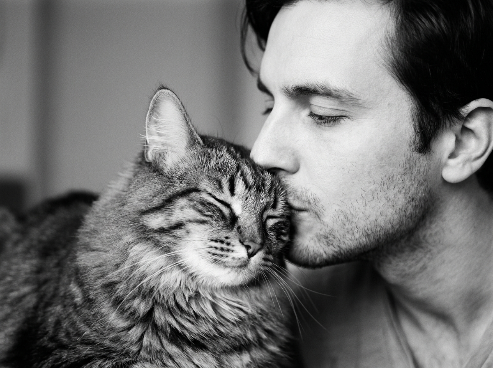
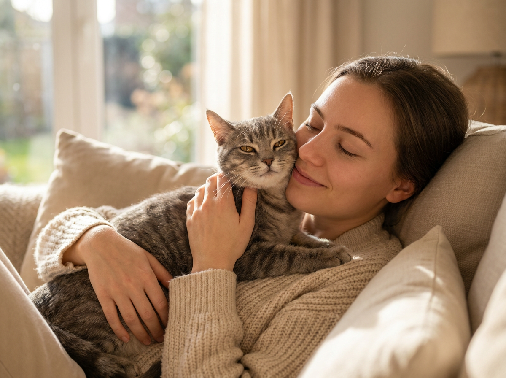
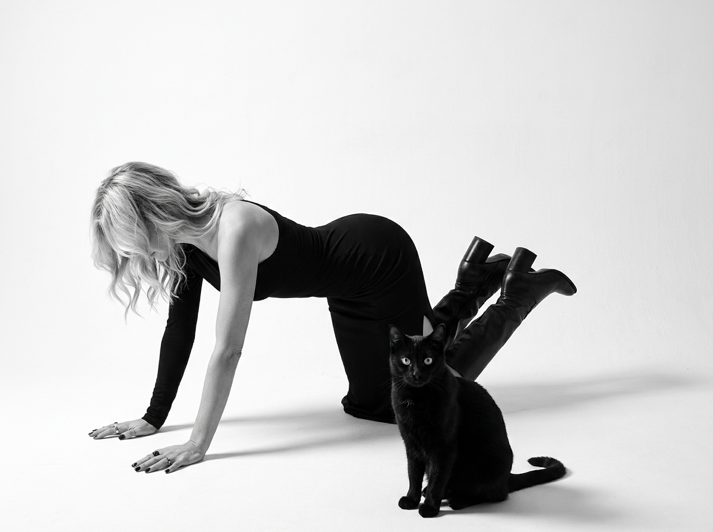
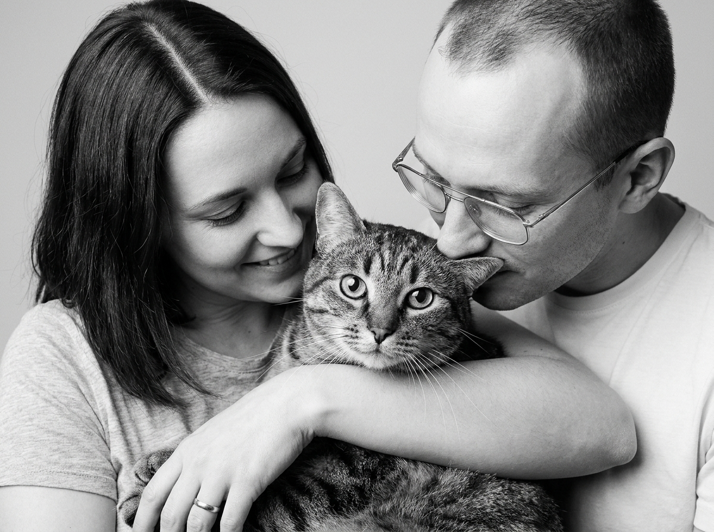
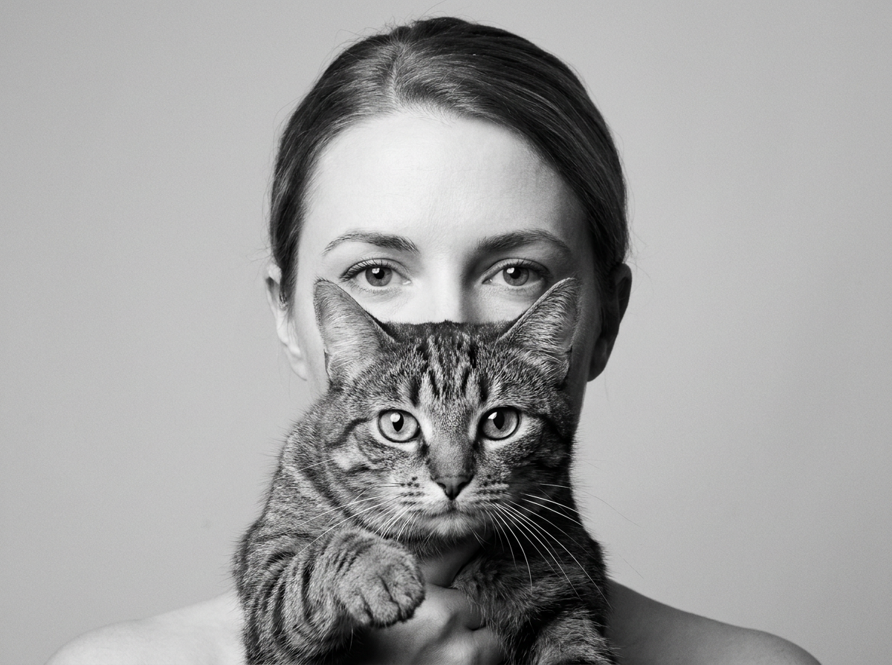
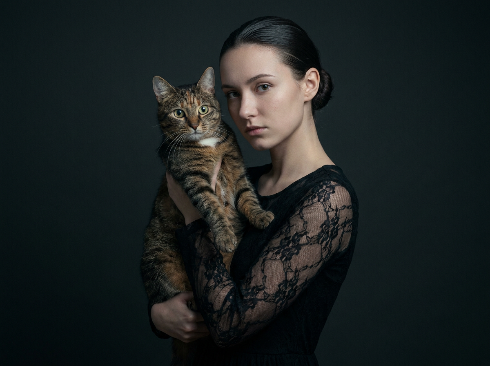
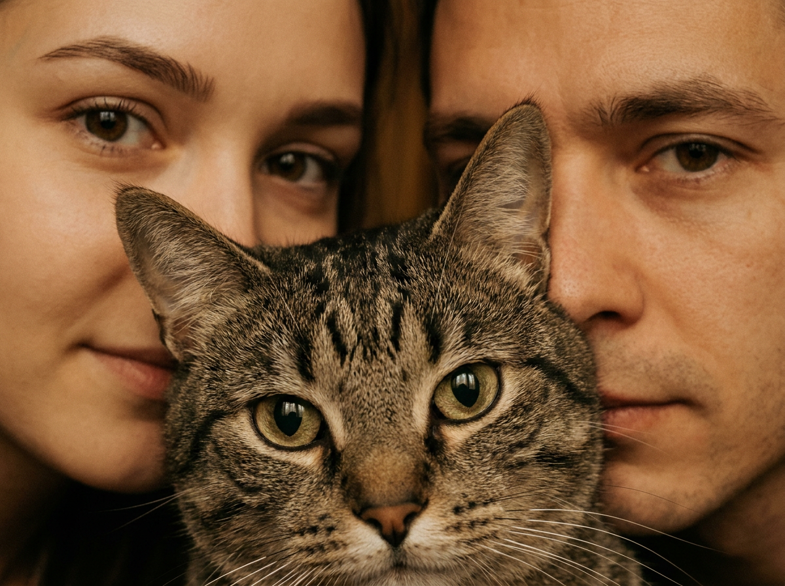
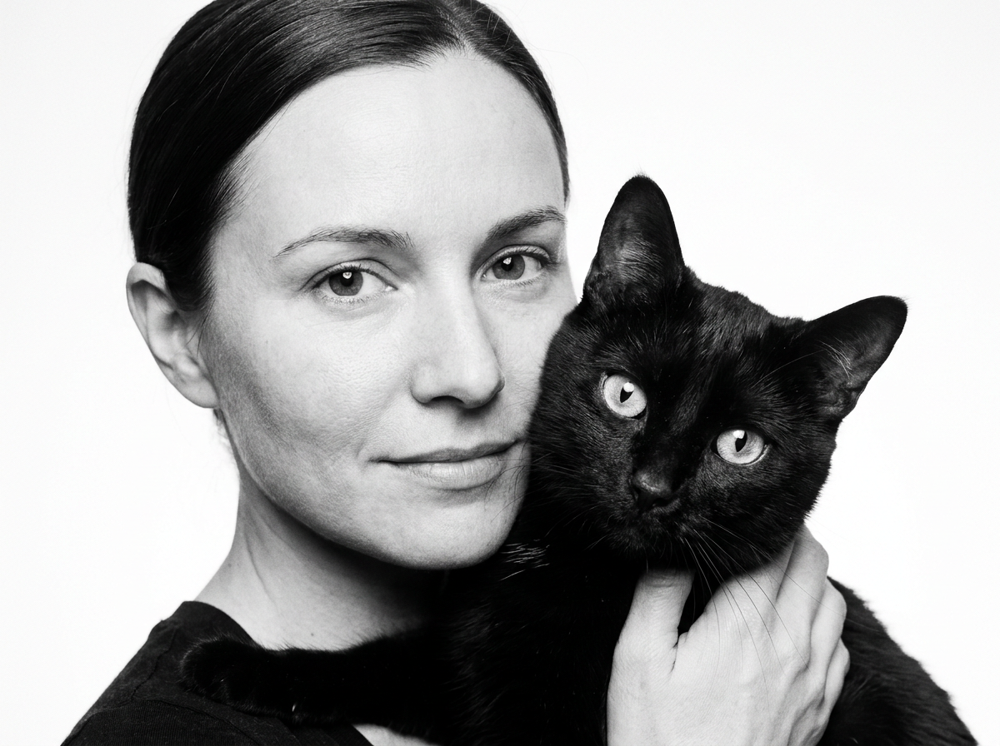
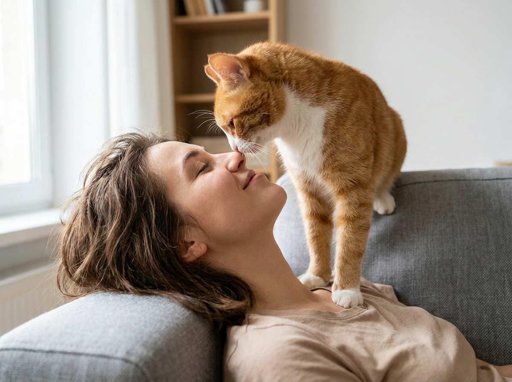
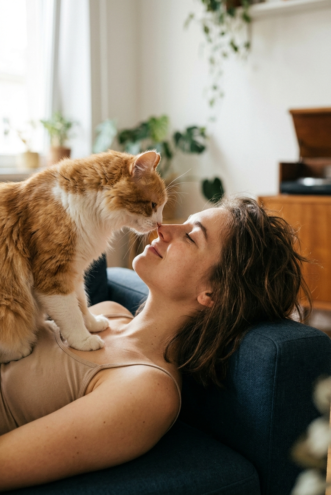

ИИ-фото с кошкой: 10 промптов для нейросети

Обычный снимок с кошкой часто теряет настроение: питомец отворачивается, лица перекрываются, а руки и лапы выглядят неестественно. Генерация помогает собрать сцену заново — с нужным светом, позой, крупностью плана и атмосферой.
В подборке — 10 промптов для разных сюжетов: от тёплых объятий на диване до чёрно-белой fashion-съёмки, портрета с котом вместо маски и почти сюрреалистичного кадра, где питомец оказывается между лицами.
Как сгенерировать такое фото: пошагово
Нужен снимок анфас при ровном свете, лицо в кадре целиком, без тёмных очков и головных уборов. Разрешение от 1000 пикселей по короткой стороне. Чем чётче исходник, тем точнее модель повторит черты.
Выберите сценарий ниже и нажмите «Копировать» — текст уйдёт в буфер целиком, вместе с командой сохранения внешности. Эта команда стоит первой строкой и отвечает за то, чтобы на выходе было ваше лицо, а не случайное.
Кнопка «Сгенерировать» рядом с каждым промптом открывает модель в новой вкладке. Nano Banana Pro работает с референсом лица — в отличие от моделей, которые генерируют портрет с нуля и узнаваемость теряют.
Промпт — в поле ввода, портрет — через загрузку референса. Порядок значения не имеет, но без референса команда сохранения внешности работать не будет: модели нечего сохранять.
Для сторис и ленты берите 9:16, для превью и обложек — 4:3. Первый результат редко идеален: если поза или свет ушли не туда, поправьте соответствующую часть промпта и запустите заново. Обычно хватает двух-трёх итераций.
10 промптов для генерации
1. Нежный поцелуй с кошкой
Строго сохранить внешность по загруженному референсу: черты лица, пропорции, мимику и текстуру кожи без изменений. Фотореалистичный вертикальный чёрно-белый портрет в стиле fine art film, снятый крупным планом в студийно-домашней интерьерной атмосфере. Мягкий контраст, деликатная виньетка, умеренное плёночное зерно, чистый однотонный фон с лёгким студийным боке. Мужчина занимает правую часть кадра: видны только фрагмент головы, лица и плеча, лицо развёрнуто влево. Он нежно целует кошку в макушку, касаясь её носом и губами. Кошка расположена слева по центру и занимает большую часть изображения; в кадре хорошо видны грудь и передние лапы. Она сидит грудью к камере, расслабленно вытягивает голову вверх к мужчине. Морда кошки почти касается его носа и рта и частично перекрывает лицо. Сцена выглядит естественно, спокойно и эмоционально, без лишних предметов на фоне.
2. Объятия на диване

Строго сохранить внешность по загруженному референсу: черты лица, пропорции, мимику и текстуру кожи без изменений. Тёплое фотореалистичное lifestyle-фото дома, вертикальная композиция, мягкий утренний или вечерний свет из окна, небольшая глубина резкости. Девушка сидит или полулежит на диване среди подушек и держит кошку на руках. Она находится слева и ближе к центру, корпус немного повёрнут вправо, голова наклонена к питомцу. Глаза закрыты, брови расслаблены, на лице едва заметная нежная улыбка. Одна рука поддерживает кошку снизу, вторая обнимает её сбоку в районе груди и плеча. Кошка расположена справа по центру, доверчиво прижалась щекой к лицу девушки, нос касается её щеки или подбородка. Передние лапы лежат на груди или животе девушки, одна-две лапы слегка вытянуты вперёд. Оба героя выглядят спокойными и ласковыми, в кадре ощущаются забота и домашний уют.
3. Кошка на плече

Строго сохранить внешность по загруженному референсу: черты лица, пропорции, мимику и текстуру кожи без изменений. Фотореалистичный вертикальный чёрно-белый студийный портрет в эстетике lifestyle и fine art, один человек и один кот, мягкий направленный свет, натуральная фактура кожи и шерсти, умеренное плёночное зерно. Камера установлена на уровне лиц и немного сбоку, чтобы одновременно видеть женщину и питомца на переднем плане. Женщина находится слева, сидит или слегка наклоняется вперёд, корпус и голова повернуты вправо. Её лицо показано в мягком ракурсе 3/4, выражение тёплое, губы сомкнуты, заметна лёгкая полуулыбка. Рука находится у рта и осторожно гладит кота по спине; кисти и пальцы анатомически правильные. Кот лежит на плече женщины, словно обнимает его: туловище и грудь проходят через центральную часть кадра и закрывают большую часть её корпуса. Голова кота направлена вправо, он выглядит расслабленным и доверчивым. Нейтральный студийный фон не отвлекает от контакта.
4. Fashion-поза на полу

Строго сохранить внешность по загруженному референсу: черты лица, пропорции, мимику и текстуру кожи без изменений. Фотореалистичная чёрно-белая fashion-фотография взрослой девушки и чёрной кошки в полный рост, формат medium full shot, минималистичная белая циклорама. Высокий ключевой студийный свет создаёт мягкие, но заметные тени на полу. Девушка лежит в динамичной editorial-позе: опирается на обе руки, корпус подан вперёд, колени согнуты, ноги уходят назад и вправо, одна нога немного вытянута. На ней высокие чёрные сапоги на каблуке и длинное облегающее матовое чёрное платье с длинными рукавами; одно плечо открыто, силуэт лаконичный, без вульгарности. Волосы уложены мягкими волнами, часть прядей закрывает лицо и падает вперёд. Голова опущена вниз и немного влево, взгляд не направлен в объектив. Чёрная кошка находится рядом с девушкой в передней части композиции, поза естественная и спокойная. Стиль журнальной съёмки, графичные линии, реалистичные ткани и шерсть.
5. Кот между хозяевами

Строго сохранить внешность по загруженному референсу: черты лица, пропорции, мимику и текстуру кожи без изменений. Фотореалистичный вертикальный чёрно-белый студийный портрет в жанре семейной fine art-съёмки, мягкая плёночная фактура, умеренное зерно, реалистичная детализация кожи, волос и шерсти. В кадре девушка слева, мужчина справа, а кот занимает центральную позицию и является главным акцентом. Видны плечи, верхняя часть тела и руки. Девушка сидит ближе к камере, корпус немного развёрнут вправо, голова наклонена к питомцу; она смотрит вниз на кота с мягкой полуулыбкой. Мужчина сидит или полусидит справа, повёрнут влево, наклоняет голову к коту и почти касается его губами, будто нежно целует или прижимается к его макушке. Его взгляд направлен на животное, выражение спокойное и ласковое. Кот находится между лицами, слегка поднят, его морда хорошо видна в центре. Свет мягкий студийный, фон нейтральный, композиция эмоциональная и естественная.
6. Кот вместо маски

Строго сохранить внешность по загруженному референсу: черты лица, пропорции, мимику и текстуру кожи без изменений. Фотореалистичный вертикальный крупный план в чёрно-белой студийной эстетике. Женщина стоит или сидит прямо перед камерой, видна верхняя половина её лица: глаза, брови и часть лба. Волосы гладко собраны назад, макияж лёгкий и аккуратный, брови подчёркнуты, взгляд направлен в объектив. Выражение спокойное, уверенное, с лёгкой загадочностью. Нижняя часть лица полностью скрыта котом, который сидит или поддерживается на уровне рта и подбородка, превращаясь в необычную живую маску. Кот находится на переднем плане строго по центру, смотрит прямо в камеру, уши подняты и симметричны. Это серый дымчатый табби с полосами, светлыми участками на груди и щеках, крупными янтарно-зелёными глазами, переданными в чёрно-белой гамме. Использовать мягкий направленный свет, реалистичную шерсть, точный фокус на глазах и умеренное плёночное зерно.
7. Тёмный портрет с котом

Строго сохранить внешность по загруженному референсу: черты лица, пропорции, мимику и текстуру кожи без изменений. Фотореалистичный вертикальный студийный портрет в мрачной fine art-эстетике: молодая женщина держит кота на руках в тёмной студии. Женщина стоит или позирует почти неподвижно, плечи расслаблены, голова слегка наклонена, лицо развёрнуто на три четверти, взгляд направлен в камеру. Выражение спокойное, уверенное и немного серьёзное. Волосы собраны вверх в гладкий пучок или подобие короны, открыты лоб и шея. Макияж аккуратный: выразительные брови, подчёркнутые глаза, матовая помада. На женщине чёрное платье или костюм со свободной посадкой, юбка расширяется книзу; на рукавах заметны прозрачные кружевные манжеты, хорошо видны плетение, швы и слои ткани. Кот находится слева на переднем плане, короткошёрстный табби тёмно-коричневого или рыжевато-коричневого окраса, с полосами и белёсой зоной на подбородке и груди. Нос тёмный, шерсть детализирована, свет драматично выделяет лицо животного и женщину.
8. Кошка между лицами

Строго сохранить внешность по загруженному референсу: черты лица, пропорции, мимику и текстуру кожи без изменений. Фотореалистичный интимный extreme close-up «cat between faces» с тёплой кинематографичной цветокоррекцией в золотисто-коричневых оттенках, мягким контрастом и почти полностью размытым фоном. Камера расположена очень близко, создавая ощущение, что люди и кошка почти касаются объектива. Кот занимает центр изображения и перекрывает обе стороны кадра, его морда и глаза находятся в самой резкой зоне. Слева в верхней части виден только фрагмент лица девушки: один глаз, бровь, верхняя линия щеки и висок, без носа и губ. Её глаз расположен в верхней трети, примерно на расстоянии 15–25 процентов от верхнего края; лицо занимает около четверти ширины кадра. Справа показан аналогичный фрагмент лица мужчины: один глаз, бровь и часть щеки или скулы, нижняя часть скрыта котом. Оставить между героями минимальное расстояние, сохранить естественную текстуру кожи, усов и шерсти, без лишнего фона.
9. Портрет девушки и кота

Строго сохранить внешность по загруженному референсу: черты лица, пропорции, мимику и текстуру кожи без изменений. Фотореалистичный вертикальный чёрно-белый портрет в стиле fine art film, высокий ключ и почти белый чистый фон. Кадр плотный, с ощущением съёмки вплотную к героям. Девушка находится слева, показана крупно в профиль или в ракурсе 3/4; в композиции видны лицо, часть плеча и ключиц, кадрирование проходит от верхней линии волос до области ниже плеч. Руки не должны полностью попадать в кадр, допускается только небольшой участок поддержки или объятий. Девушка смотрит прямо в объектив, выражение мягкое и спокойное, губы образуют лёгкую полуулыбку. Справа на переднем плане находится кот, очень близко к камере. Его морда и глаза — самые резкие детали изображения, голова занимает примерно 40–50 процентов ширины правой стороны. Кот лежит или приподнят на груди девушки, тело частично перекрывает её одежду. Использовать мягкий равномерный свет, натуральные пропорции, детальную шерсть и умеренную плёночную зернистость.
10. Кот над лицом девушки

Строго сохранить внешность по загруженному референсу: черты лица, пропорции, мимику и текстуру кожи без изменений. Фотореалистичная домашняя lifestyle-сцена в тёплой цветовой гамме, вертикальный кадр, мягкий дневной свет из окна и малая глубина резкости. Камера смотрит снизу вверх, поэтому лицо девушки расположено в нижней части изображения, а кот доминирует сверху. Девушка лежит на спине или на боковой поверхности дивана, голова запрокинута назад, шея вытянута, подбородок слегка поднят. Её глаза закрыты, лицо расслабленное и милое, губы естественно разомкнуты, будто она смеётся или играет с питомцем. Кот сидит очень близко к объективу на подлокотнике дивана, в верхней центральной зоне. Передние лапы опираются на подлокотник, корпус наклонён вперёд, мордочка направлена вниз к лицу девушки. Нос кота почти касается её носа, между ними остаётся минимальный зазор. Фон домашний, но сильно размыт, свет мягко подсвечивает шерсть, кожа и детали дивана выглядят натурально.
Что важно учесть в этом стиле
Для реалистичного ИИ-фото сначала задайте тип съёмки: портрет, lifestyle, fashion или extreme close-up. Затем уточните вертикальный формат, положение героев в кадре, направление взгляда и точку контакта. Чем точнее описаны нос, лапы, плечо и границы кадрирования, тем меньше случайных деформаций.
Для портрета подойдут параметры вроде 85 мм, f/2 и мягкого студийного источника. Для домашней сцены лучше указать 50 мм, f/1.8, свет из окна и фон с сильным размытием. Если нужен чёрно-белый кадр, отдельно пропишите оттенки серого, мягкий контраст и плёночное зерно — иначе нейросеть может оставить цветные детали.
Идеи для вариаций
- Замените породу: добавьте рыжего мейн-куна, белую короткошёрстную кошку или пушистого серого табби.
- Перенесите сцену из студии в спальню, зимний сад, кафе с панорамным окном или минималистичную гостиную.
- Попробуйте квадратный кадр 1:1 для аватарки или широкий формат 16:9 для обложки.
- Смените настроение: мягкий утренний свет, контрастный боковой луч, неоновая подсветка или винтажная вспышка.
- Добавьте реквизит — плед, книгу, кресло, букет сухоцветов, но ограничьте его двумя-тремя предметами.
Как собрать свой промпт
Разделите описание на пять частей: стиль и техника, композиция, поза человека, положение кошки, свет и фон. Сначала определите, кто занимает центр и что должно быть самым резким. После этого задайте расстояние между лицами, направление головы, положение лап и границы кадра.
Избегайте расплывчатого «милое фото с котом». Лучше написать: «вертикальный портрет, кот справа на переднем плане, его глаза в резкости, девушка слева смотрит в камеру, нос животного касается её щеки». Для сложной сцены подготовьте 4–8 генераций, а затем уточняйте только проблемный фрагмент: пальцы, лапы, глаза или фон.
Ошибки, из-за которых кадр не получается
- Слишком много действий в одном запросе. Если описать объятие, поцелуй, движение и сложный ракурс одной фразой, модель может смешать позы.
- Не задан главный объект. Укажите, чьи глаза и лицо должны быть в резкости, иначе фокус случайно уйдёт на фон.
- Нет ограничений по кадрированию. Пропишите, что именно видно: только плечи, один глаз, верхнюю часть лица или передние лапы.
- Игнорируются руки и лапы. Добавляйте «анатомически корректные пальцы», «четыре видимые лапы» и «естественная опора на диван», если они попадают в сцену.
- Несовместимый свет. Не соединяйте high-key белую циклораму с тёмным клубным фоном, если не хотите получить грязные серые пятна.
Частые вопросы
Как сделать такое ИИ-фото бесплатно?
Для первых попыток подойдут Kandinsky и Шедеврум: у них есть бесплатная генерация, но могут быть очереди, ограничения по числу запросов и менее точное следование сложной композиции. В Krea AI и Arena.ai можно тестировать разные модели и сравнивать результаты, однако доступные режимы и лимиты меняются. Референс поддерживается не во всех сценариях одинаково: иногда изображение можно загрузить только для стилизации, а точное сохранение лица, позы и внешности не гарантируется. Для старта сделайте 4–8 вариантов, затем доработайте лучший.
Как сохранить внешность человека на ИИ-фото?
Загрузите качественный референс анфас или в нужном ракурсе, без очков, сильных теней и фильтров. В промпте отдельно задайте позу, одежду и свет, а не пытайтесь описать внешность длинным списком. Если сервис поддерживает силу влияния референса, начните со среднего значения: слишком слабое изменит лицо, слишком сильное может сломать композицию.
Почему кошка получается с лишними лапами?
Сложные контакты с руками и лицами часто приводят к ошибкам анатомии. Укажите точное число видимых лап, опору животного и границы тела: например, «две передние лапы на подлокотнике, задние скрыты корпусом». Негативный промпт можно дополнить словами «лишние конечности, сросшиеся лапы, деформированные пальцы».
Как получить чёрно-белый снимок без серой грязи?
Задайте monochrome, black and white, мягкий контраст, чистые белые и глубокие, но не проваленные тени. Добавьте источник света и фон: например, большой софтбокс слева и светлая циклорама. Если результат выглядит плоским, уточните фактуру шерсти, контур лица и лёгкое плёночное зерно, но не добавляйте чрезмерную резкость.